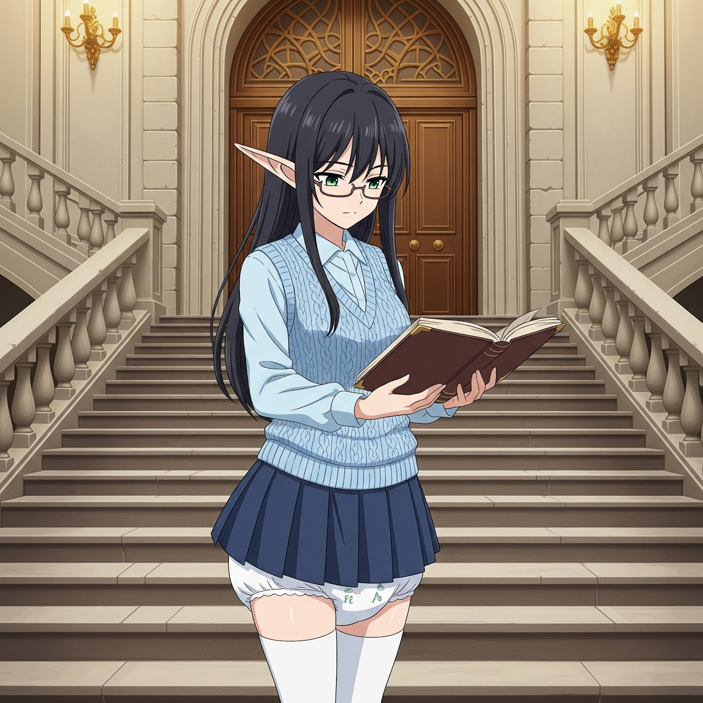
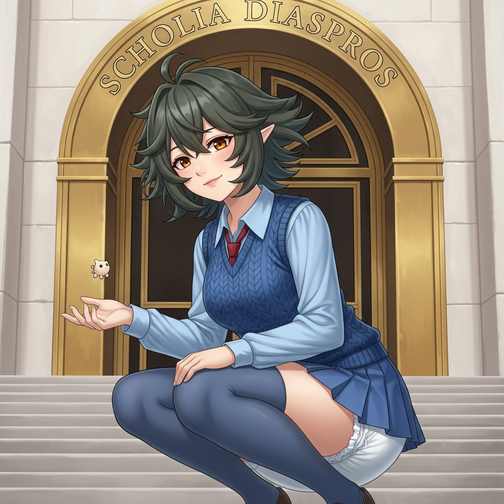
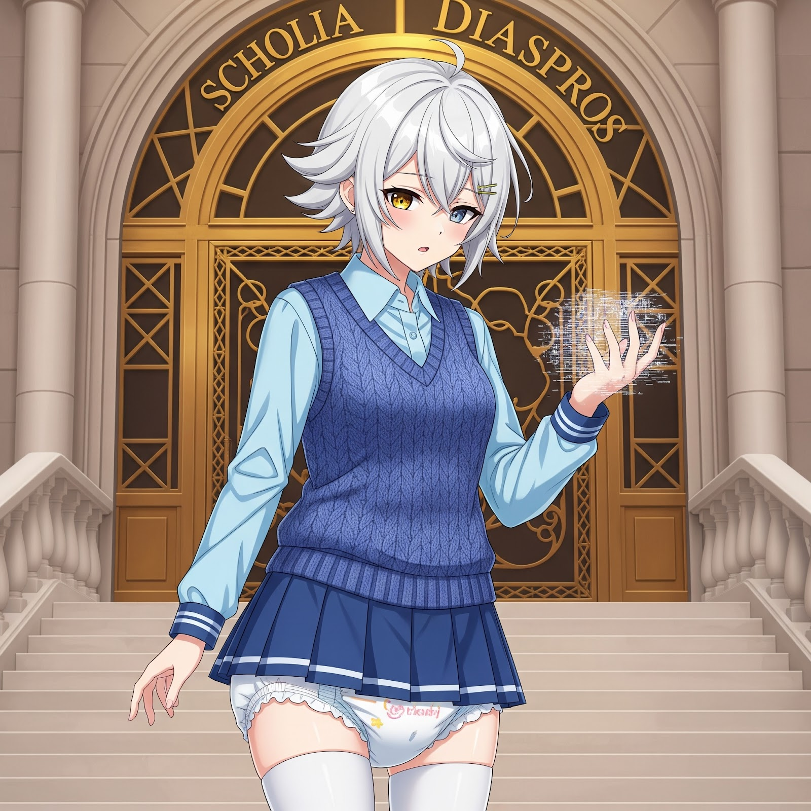
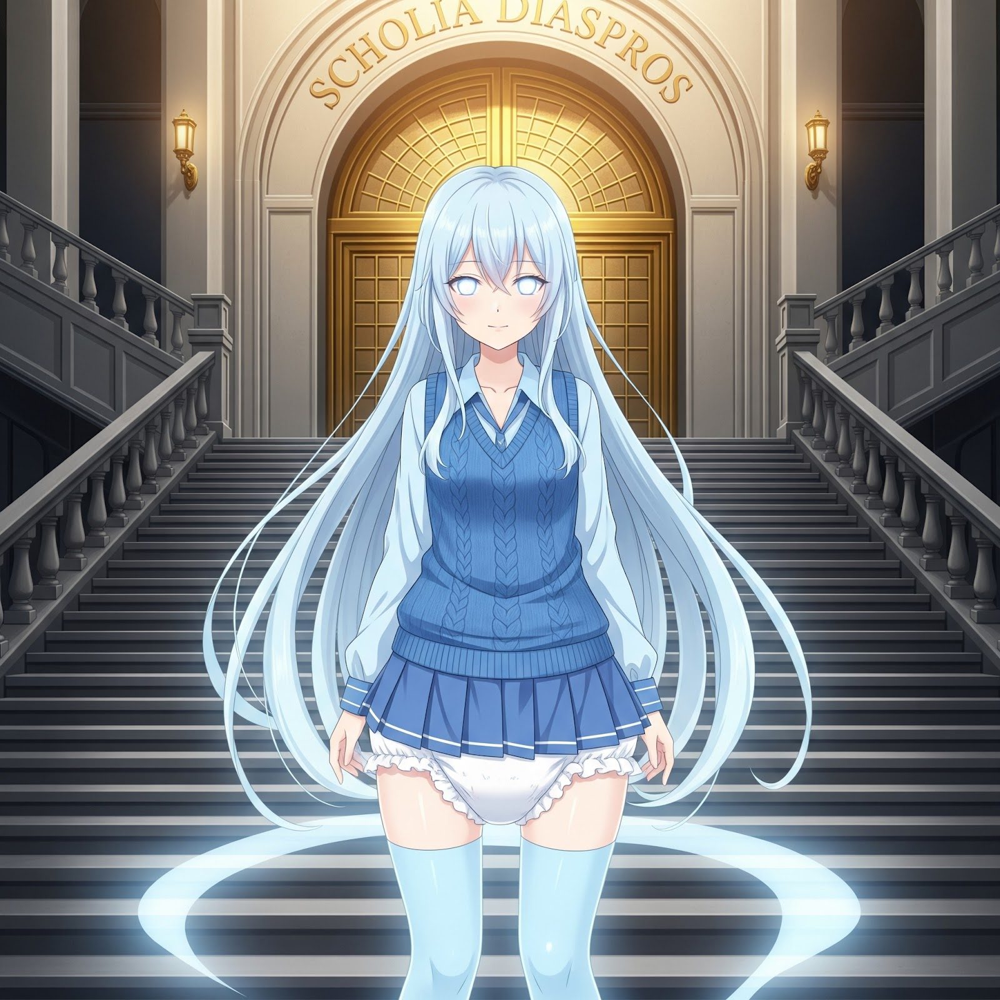
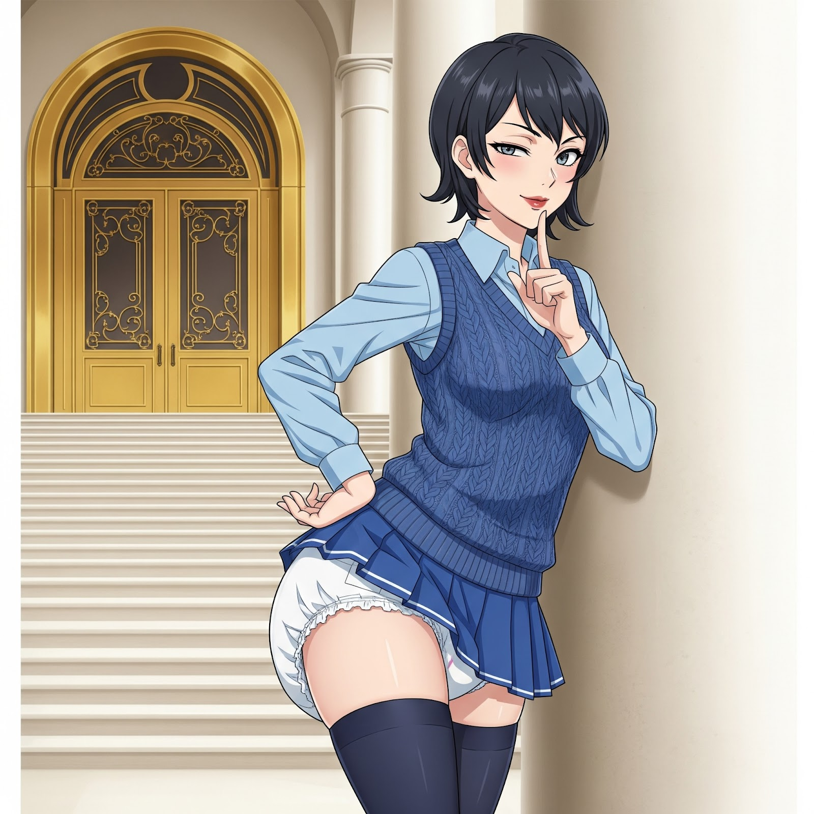
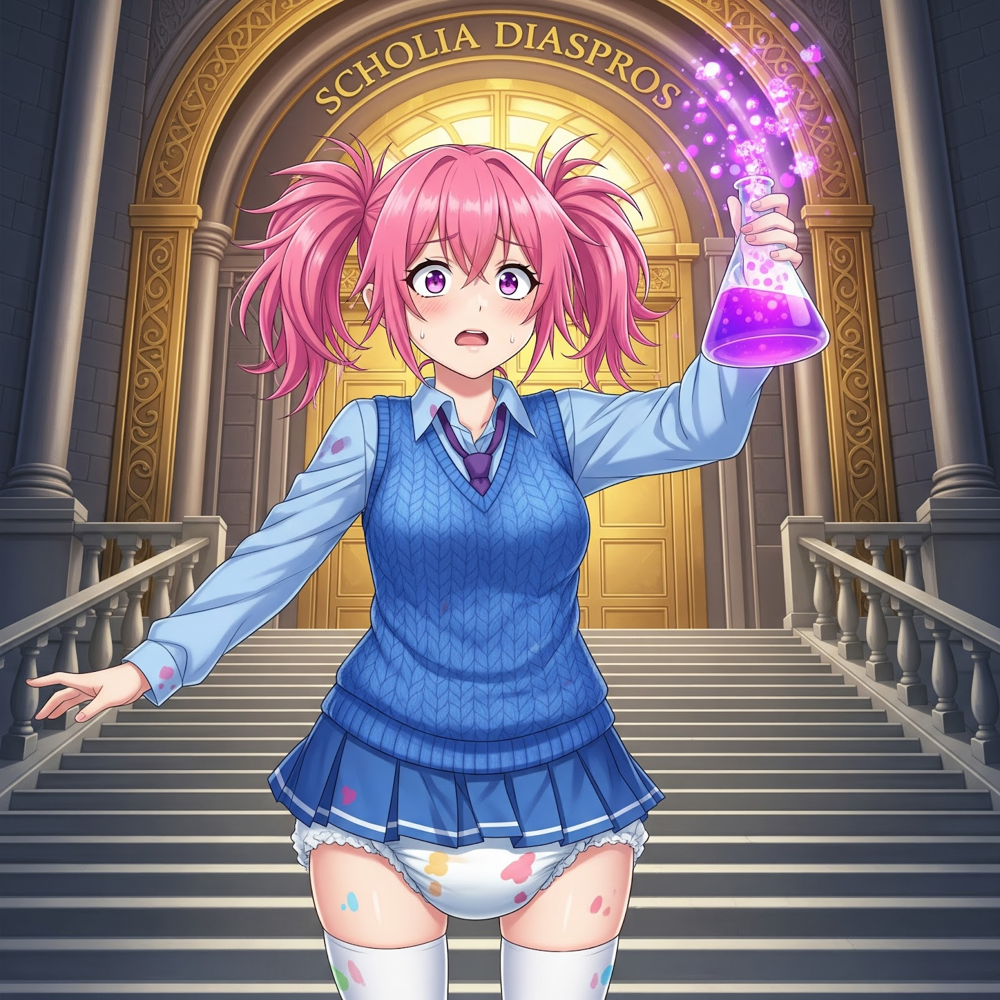

Scholia Diaspros
Origin Feats
A collection of new Origin Feats tailored for the Diaper School setting. These feats can be chosen by players to reflect their character's unique history, talents, or unfortunate circumstances within the academy.
Forever Small
Whether due to a quirk of magic, a minor curse, or simply genetics, you never quite had that growth spurt. You're destined to navigate the world from a lower perspective, which has its own unique advantages and challenges.
- Your size is Small, regardless of your race's normal size.
- You gain a +1 bonus to your Armor Class.
- You have advantage on Dexterity (Stealth) checks.
- You can move through the space of any creature that is of a size larger than yours.
- You have disadvantage on Strength (Athletics) checks made to shove or grapple creatures larger than you.
- Any weapon with the "heavy" property is wielded with disadvantage.
- You gain the Incontinent trait. This condition can be overcome with dedicated potty-training efforts during downtime.
Padding Tsundere
"It's not like I LIKE wearing these, okay?! They're just... practical! And comfortable! But that doesn't mean anything, baka!"
You have a complicated relationship with diapers. Your effectiveness is tied to this internal conflict, swinging between frustrated embarrassment and secret, confident enjoyment.
- When your diaper is clean, you gain all the benefits of the Diaper-Mastery feat.
- When your diaper is soiled, you lose the benefits of the Diaper-Mastery feat and suffer a -1 penalty to all attack rolls, ability checks, and saving throws.
- While your diaper is soiled, you can use a bonus action to find a moment of private enjoyment. Make a Charisma (Deception) or Dexterity (Sleight of Hand) check contested by the passive Wisdom (Perception) of any onlookers. On a success, the penalty is replaced with a +2 bonus to all rolls until your next change, and you regain the Diaper-Mastery benefits. On a failure, the penalty remains.

Padded Professor in Training
You've always been a bookworm, more interested in the theory of magical diapers than their practical application. You're a fountain of knowledge on everything from proper folding techniques to the arcane principles of absorbency.
- Increase your Intelligence or Wisdom score by 1, to a maximum of 20.
- You gain proficiency in two of the following skills: Arcana, History, Investigation, or Medicine.
- You have advantage on any ability check made to recall lore about the Academy's history, its staff, or the properties of various types of mundane or magical diapers.
- You learn the Little Miracle cantrip and one other cantrip of your choice from the wizard or cleric spell list.
Born Brat
Rules were made to be bent, broken, or blamed on someone else. You've been getting your way since you were in pull-ups, and you've elevated whining and manipulation to a high art form.
- Increase your Charisma score by 1, to a maximum of 20.
- You gain proficiency in the Deception and Persuasion skills.
- You have advantage on Charisma (Persuasion) checks made to get out of trouble or punishments, and on Charisma (Deception) checks made to shift blame for your misdeeds onto another creature.
- When a creature attempts to punish you, you can use your reaction to make a contested Charisma (Persuasion) check against their Wisdom (Insight). On a success, the severity of your punishment is halved. You can't use this feature again until you finish a long rest.

Darkling Whisperer
You see a strange sort of logic in the shadows, a hidden beauty in the darklings that others dismiss as monsters. This connection grants you a unique, if unsettling, edge.
- Increase your Wisdom or Charisma score by 1, to a maximum of 20.
- You have advantage on Wisdom (Animal Handling) and Wisdom (Insight) checks when interacting with monstrosities and aberrations, including Darklings.
- You can communicate simple ideas to Darklings through non-verbal cues and guttural sounds.
- You can cast Animal Friendship at will, but only on beasts and monstrosities with an Intelligence score of 5 or lower.

Chronal Hiccup
Time is more of a suggestion for you. This temporal instability is confusing, but it sometimes works in your favor, letting you rewind a clumsy moment or get a brief glimpse of what's next.
- Increase your Dexterity or Intelligence score by 1, to a maximum of 20.
- You gain a +5 bonus to your initiative rolls.
- When you or a creature you can see within 30 feet of you makes an attack roll, an ability check, or a saving throw, you can use your reaction to give that roll advantage or disadvantage. You can't use this feature again until you finish a short or long rest.
Potty-Trained Paragon
You stand as a bastion of bladder control in a world awash with accidents. Your discipline and training have given you a resilience that the padded populace can only dream of.
- You are considered Potty-Trained and have advantage against effects that would magically inflict the Incontinent trait.
- You have advantage on Continence Checks made under duress (such as from extreme stress or magical compulsion).
- Once per long rest, when you fail a saving throw against an effect that would cause you to have an "accident", you can choose to succeed instead.

Wellspring Resilience
You survived the energies of the Well of Souls, and its humming, spectral power has left a permanent mark on you, making you unnervingly resilient to forces that affect the mind and spirit.
- Increase your Constitution or Charisma score by 1, to a maximum of 20.
- You have advantage on saving throws against being charmed or frightened, and you have resistance to psychic damage.
- You learn one cantrip of your choice from the Sorcerer or Warlock spell list. Your spellcasting ability for this cantrip is Charisma.

Rulebender
You used to be the law. Now you're the loophole. Your intimate knowledge of the academy's regulations and physical layout makes you exceptionally good at navigating both.
- Increase your Intelligence or Dexterity score by 1, to a maximum of 20.
- You gain proficiency in the Investigation and Stealth skills.
- You have advantage on checks made to find secret passages, hidden compartments, or notice unusual details within the academy's campus.
- Once per long rest, you can automatically succeed on one Dexterity (Stealth) check made to hide from or move silently past academy staff or monitors.

Accident-Alchemy Initiate
You have a chaotic, intuitive talent for brewing strange potions. Sometimes they even do what you want them to.
- Increase your Intelligence score by 1, to a maximum of 20.
- You gain proficiency with Alchemist's Supplies.
- During a short rest, you can create one "Unstable Concoction". When a creature interacts with it, roll a d6 to determine the effect:
- The target regains 2d4 + your Intelligence modifier hit points.
- The target gains advantage on Strength checks for 10 minutes.
- The target can cast Jump at will for 1 minute.
- The target's skin turns a shimmering color for 1 hour.
- The target is overcome with uncontrollable giggles for 1 minute (incapacitated).
- The target's diaper is instantly filled, bypassing any saves.